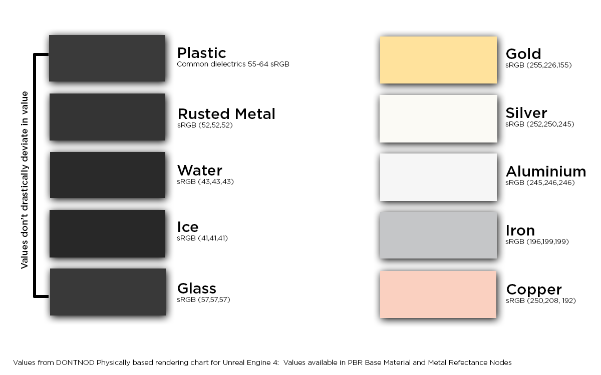
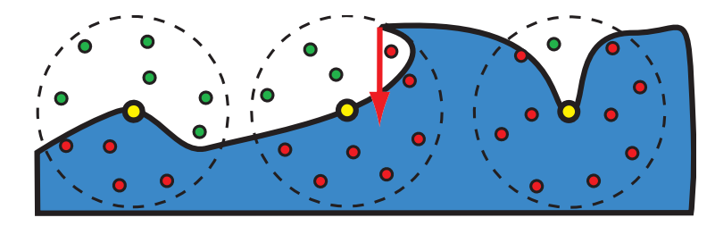
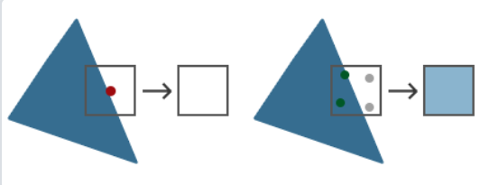
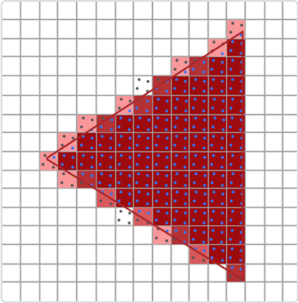
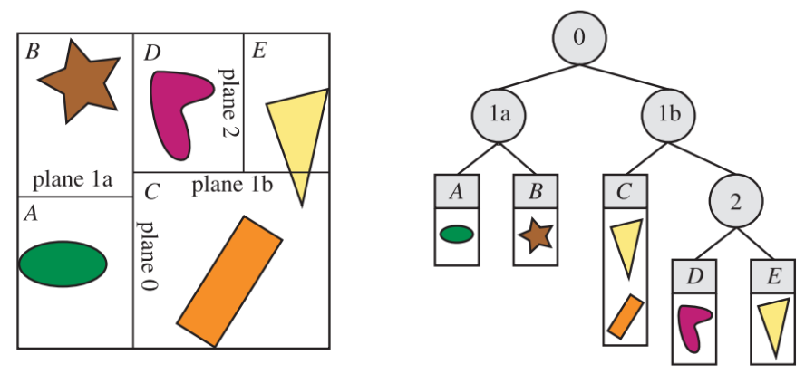
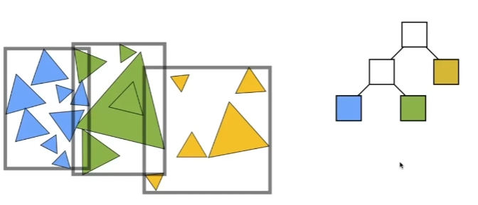

Graphics Interview Review
I’ve been writing blogs in English for a while, simply because I wanna practice my English. But since this note is for reviewing interviews in China, I decided to do it in Chinese and use English to mark some important terms.
C++ Basics
-
虚函数
(1) 多态虚函数原理
(2) 不实现虚函数会报错吗？什么错？
(3) 构建空间是否连续 -
智能指针
(1) 智能指针类型
(2) shared_ptr 线程安全 -
dynamic_cast / const_cast / static_cast
-
move
(1) 左值右值
(2) move 原理
(3) 完美转发 (使用场景) -
stl 是什么 内部容器的原理和时间复杂度
-
如何设计一个内存池
-
lamda 函数
（1）lambda 引用陷阱 -
类默认成员函数
-
c++内存对齐机制 sizeof（）使用
-
c++的源码到 exe 的过程
-
c++的动态链接静态链接
-
c++的运行内存分配
(1) 如何在栈上分配一定的内存？会有什么问题？
(2) 如何检查和处理内存泄露的问题？
计算机网络
- TCP UDP 原理和区别
- moba 设计 UDP TCP 的选择
- TCP 粘包
- 可靠 UDP 的实现思路
操作系统
-
虚拟内存的分配机制
-
线程和进程区别，协程（重点关注下）
-
线程/进程通讯及切换原理
-
两个函数同一个地址执行问题
-
内存中堆栈，数据区哪里读取快
-
共享内存的实现
UE
-
UE 的垃圾回收机制
-
UE 的移动端渲染管线
-
UE 的虚拟纹理原理 源码
-
UE 的网络同步机制
-
UE 的物理引擎原理
-
为什么 UE 中 PBD 能处理刚体 而不是单一的粒子
-
GPU 硬件架构
-
移动端 PC 端 GPU 架构差异
图形学
1. 渲染管线流程（★）
(1) 渲染管线分为哪些阶段
(参考 Realtime Rendering 4th Chapter 2 中的叙述：https://www.wolai.com/nh4s1M7ArK91KtNGjZco1Y)
- 应用阶段（Application）：准备数据 和 设置状态。
- 输入数据：应用程序输入三维场景数据，包括模型顶点位置、顶点法线坐标、顶点纹理坐标、材质属性等。
- 顶点数据准备：应用 空间加速算法 通过空间划分减少不必要的计算，加速碰撞检测 和 光线追踪。
- BVH（Bounding Volume Hierarchy）：一种层次包围体结构，递归地把物体划分成子集并计算新的包围盒，形成树状结构。
- 四叉树（Quadtree）：二维空间划分。
- 八叉树（Octree）：三维空间划分。
- kd 树 （k-dimensional tree）：组织 k 维空间中的点，沿某一个轴进行划分。
- 图元组装（Primitive Assembly）：把顶点数据组装成图元（三角形、线段、点）。
- 视锥剔除（Frustum Culling）：判断图元是否在相机视锥体内（相交也算），不在则剔除。通常通过检测包围盒和视锥体来实现，剔除完全不可见的图元，运算量低但精度也低。
- 碰撞检测
- 状态设置：设置渲染状态，如 光照模型、着色器程序、纹理、混合模式等。
- 动画物理模拟
- 输出：输出顶点流给几何处理阶段。
PS: 应用阶段通常在 CPU 端完成（因此开发者可以完全控制在应用阶段发生的事情），剩下几个阶段通常都在 GPU 端完成，因此如果要回答 GPU 渲染管线流程，只需回答一下 3 个阶段.
-
几何处理阶段（Geometry Processing）：顶点和图元的变换与裁剪。
-
顶点着色器（Vertex Shader）：对每个顶点进行处理，进行顶点坐标变化并计算顶点属性。
- 顶点变换：通过模型矩阵（M，从模型坐标系到世界坐标系）、观察矩阵（V，从世界坐标系到相机坐标系）、投影矩阵（P，投影变换，正交/透视，从相机坐标系变换到剪裁空间）把顶点变换到剪裁空间中（Clipping Space）。
- 顶点着色：Flat Shading（一个顶点颜色来代表整个三角面的颜色，默认是使用索引中第一个顶点的颜色）、Gouraud Shading（在顶点着色器中计算三个顶点的光照信息，然后在光栅化阶段插值得到三角形内部各个片段的光照信息）
-
在顶点处理阶段的末尾，还有一些可选的阶段，包括曲面细分(tessellation)（使用曲面细分可以为一个曲面生成数量合适的三角形，同时兼顾质量和效率）、几何着色(geometry shading)（将各种类型的图元作为输入，然后生成新的顶点， e.g., 生成粒子模拟烟花爆炸，每颗火花都可以表示为一个点，即一个简单的顶点。几何着色器可以将每个顶点都转换成一个由两个三角形组成的正方形，这个正方形会始终面朝观察者，并且会占据若干个像素）和流输出(stream output)（把 GPU 作为一个几何引擎，我们可以选择将这些处理好的数据输入到一个缓冲区中，而不是将其直接输入到渲染管线的后续部分并直接输出到屏幕上，这些缓冲区中的数据可以被 CPU 读回使用，也可以被 GPU 本身的后续步骤使用。这个阶段通常会用于粒子模拟）等
-
图元处理（Primitive Processing）
- 裁剪（Clipping）：裁剪掉不在视锥体内的顶点。这部分完全由硬件控制。为什么应用阶段进行过视锥剔除了这里还要进行裁剪？因为二者粒度不同，视锥剔除是通过包围盒剔除掉完全不在视锥范围内的图元，而裁剪是在三角形层面上剔除掉不在视锥范围内的像素。
- 屏幕映射（Screen Mapping）：把裁剪后的坐标映射到屏幕坐标系（归一化设备坐标 NDC 转换为 窗口坐标）。
-
输出：窗口坐标和定点信息给光栅化阶段
-
-
光栅化阶段（Rasterization）：设置三角形 + 遍历三角形 找到待渲染图元中的所有像素值（完全由硬件控制）。
- 设置三角形：计算三角形微分、边界方程。
- 遍历三角形：确定哪些像素被三角形覆盖，并生成一个片元（fragment）。最简单的方式就是直接将每个像素的中心点来作为该像素的样本，如果该像素的中心点位于三角形内部的话，那么我们就认为该像素也位于三角形的内部。我们还可以通过超采样（supersampling）或者多重采样抗锯齿技术（multisampling antialiasing），来对每个像素进行多次采样（Realtime Rendering Chapter 5.4.2）。另一种方法是使用保守光栅化（conservative rasterization），即当某个像素只要有一部分与三角形重叠时，我们就认为该像素位于三角形内部。对三角形三个顶点上的属性进行插值，来获得每个三角形片元的属性（Realtime Rendering Chapter 5），这些属性包括片元的深度，以及几何阶段输出的相关着色数据等。
-
像素处理阶段（Pixel Processing）：对像素着色、测试、混合。
-
像素着色（Pixel Shading）：计算每个像素的最终颜色。计算出的颜色存储在颜色缓冲（Color Buffer）中。
- 纹理采样
- 光照计算
- 阴影计算（阴影贴图或计算阴影体积）
- 材质混合
-
像素合并（Pixel Merging）：各种测试和混合操作，如裁剪测试、透明测试、模板测试、深度测试（按相对顺序）以及色彩混合等。
- 裁剪测试：允许程序员开设一个裁剪框，只有在裁剪框内的片元才会被显示出来，在裁剪框外的片元皆被剔除。裁切测试可以避免当视口比屏幕窗口小时造成的渲染浪费问题。通常情况下，我们会让视口的大小和屏幕空间一样大，此时可以不需要使用到裁切测试。
- 透明测试（Alpha Testing）：alpha 表示物体的不透明度。1 代表完全不透明，0 代表完全透明。可选的 alpha 测试可在深度测试执行前在传入片段上运行。片段的 alpha 值与参考值作某些特定的测试（如等于，大于等），如果片段未能通过测试，它将不再进行进一步的处理。 alpha 测试经常用于不影响深度缓存的全透明片段的处理。
- 模板测试（Stencil Testing）：使用模板缓冲区进行高级遮挡测试（如镜面反射、剪切区域）。模板缓冲（stencil buffer）是一个离屏缓冲区（offscreen buffer），它可以用来记录被渲染图元的位置信息。就相当于在屏幕上有一块模板盖在上面，只有位于这个模板中的图元片段，才会被渲染出来。模板测试就是用片段指定的参考值与模板缓冲中的模板值进行比较，如果达到预设的比较结果，模板测试就通过了，然后用这个参考值更新模板缓冲中的模板值；如果没有达到预设的比较结果，就是没有通过测试，就不更新模板缓冲。简单来说，就是根据物体的位置范围决定是否渲染。
- 深度测试（Depth Testing）：比较片段的深度值与深度缓冲区中的值，决定是否丢弃不可见的片段。
- 系统中的所有缓冲合称帧缓冲（frame buffer）。
- 将片段颜色与帧缓冲区中的颜色混合（如透明效果）。
- 由于渲染需要花费一定时间，为了避免观察者看到图元渲染并显示在屏幕上的过程，一般都会使用双缓冲机制（double buffering），这意味着场景的渲染都会在屏幕外的后置缓冲区中进行。当场景被渲染到后置缓冲区之后，后置缓冲区会与显示在屏幕上的前置缓冲区（front buffer）交换内容。这个交换的过程通常发生在垂直回扫（vertical retrace）的过程中，因此这样做是可行的。
-
(2) OpenGL 中由顶点数据输入到绘制出一幅图像的具体过程
参考 https://learnopengl-cn.github.io/01 Getting started/04 Hello Triangle/。
- 创建和绑定缓冲区：创建顶点缓冲对象（VBO）并将顶点数据上传到 GPU。绑定缓冲区使其成为当前使用的缓冲区。通过调用 glGenVertexArrays 创建一个 VAO；使用 glBindVertexArray 绑定 VAO，以便后续的顶点属性配置将记录到此 VAO。在 VAO 绑定的状态下，使用 glVertexAttribPointer 和 glEnableVertexAttribArray 来配置顶点属性。此时，定义了哪些属性应该从当前的 VBO 中读取数据，并设置这些属性的格式和索引。（Optional）可以通过 glBindVertexArray(0) 来解绑 VAO。这使得未来的顶点属性配置不会影响现有的 VAO；
- 着色器准备：编写顶点着色器和片元着色器；
- 创建和编译着色器：创建着色器对象，附加上代码并编译。创建着色器程序并链接；
- 绘制调用：使用 GLSL 着色器程序并调用绘制函数（如 glDrawArrays 或 glDrawElements）来执行实际的绘制操作；
- 顶点着色器：mvp 坐标变换转换到裁剪坐标系，以及顶点着色；
- 裁剪和屏幕映射：裁剪掉视体外的图元，将当前坐标映射到屏幕坐标；
- 图元装配阶段：将顶点着色器的输出数据装配成指定图元的形状，之后还有一个可选的几何着色器阶段，将输入的点或线扩展成多边形（渲染管线中的设置三角形）；
- 光栅化：找到哪些像素被三角形覆盖，以及进行插值计算；
- 片元着色器：执行光照计算，进行着色；
- 测试混合阶段，包括 Alpha 测试、模板测试、深度测试等，然后进行混合。
2. 给定入射光、法线， 求反射光方向
这里默认输入的法线是一个单位向量，所以就是 二倍的 入射光线在法线方向上的投影（点乘：cos） 的长度 乘以法线单位向量，减去 入射光向量。思路是这样的，但是要具体看入射光方向是朝向片元的还是从片元发出的。反射光线的方向（记为 ）与表面法线 () 之间的夹角（记为 ()），与入射光线方向（记为 ）和表面法线 () 之间的夹角完全相同。反射向量 () 可通过表面法线 () 和入射光方向 () 计算得出：
3. BRDF (Bidirectional Reflection Distribution Function)
辐射度量学 见 Radiometry Foundation.
(1) 概念：
BRDF 用来描述物体表面如何反射光线。BRDF 表示了从每个入射方向射过来的光，有多少被反射到每个出射方向 (更具体的图解和解释见 GAMES101 BRDF Notes)。公式：
由公式可以看出，BRDF 的定义是出射光辐射率(Radiance)的微分和入射光辐照度(Irradiance)的微分之比。
(2) 反射方程 和 渲染方程
基于 BRDF 的公式，将一个半球上所有入射光（入射方向）在半球上进行积分，则可以得到一个积分形式的公式：
这个式子即是反射方程。这个积分对于渲染逼真的光照至关重要，它计算有多少光线被反射到相机或任何其他出射方向。
在反射方程的基础上，等式右边加上一个发光项，就得到了渲染方程。
注意，这里假设所有方向都是指向外的。渲染方程也很好理解，就是从某个视角看向某个特定点，光亮度等于该点自身的发光的亮度，加上从四面八方的入射光线照射到这一点并反射到该视角的光亮度之和。因为任何一条入射光线射到 x 点上可能都会产生视线方向的反射光线，所以需要对半球面做一个积分。这里的其实就是，是入射方向与表面法线的夹角。
4. PBR（Physically Based Rendering）
参考：
https://blog.csdn.net/poem_qianmo/article/details/85239398
Realtime Rendering 4th Chapter 9
https://learnopengl.com/PBR/Theory
(1) 概念：
基于物理的渲染（PBR）是指 使用 基于物理的原理 和 微平面理论（microfacet theory） 建模的着色/光照模型，以及使用 从现实中测量的表面参数 来准确表示真实世界材质的渲染理念。PBR 的范畴包括三个方面：基于物理的材质、基于物理的光照、基于物理适配的相机。
一些基本概念：
-
微平面理论（Microfacet Theory）。微平面理论是将物体表面建模成做无数微观尺度上有随机朝向的理想镜面反射的小平面（microfacet）的理论。在实际的 PBR 工作流中，这种物体表面的不规则性用粗糙度贴图或者高光度贴图来表示。见 GAMES101 Materials and Appearances。
-
能量守恒 （Energy Conservation）。出射光线的能量永远不能超过入射光线的能量。随着粗糙度的上升镜面反射区域的面积会增加，作为平衡，镜面反射区域的平均亮度则会下降。
-
菲涅尔反射（Fresnel Reflectance）。光线以不同角度入射会有不同的反射率。相同的入射角度，不同的物质也会有不同的反射率。万物皆有菲涅尔反射。F0 是即 0 度角入射的菲涅尔反射值。大多数非金属的 F0 范围是 0.02~0.04，大多数金属的 F0 范围是 0.7~1.0。反射光的光量（入射光的一部分）由菲涅尔反射率（Fresnel reflectance）F 来描述，它取决于入射角。
-
线性空间（Linear Space）。光照计算必须在线性空间完成，shader 中输入的 gamma 空间的贴图比如漫反射贴图，需要被转成线性空间，在具体操作时需要根据不同引擎和渲染器的不同做不同的操作。而描述物体表面属性的贴图如粗糙度，高光贴图，金属贴图等必须保证是线性空间。
-
色调映射（Tone Mapping）。也称色调复制（tone reproduction），是将宽范围的照明级别拟合到屏幕有限色域内的过程。因为基于 HDR (High Dynamic Range) 渲染出来的亮度值会超过显示器能够显示最大亮度，所以需要使用色调映射，将光照结果从 HDR 转换为显示器能够正常显示的 LDR。
-
物质的光学特性（Substance Optical Properties） 。现实世界中有不同类型的物质可分为三大类：绝缘体（Insulators），半导体（semi-conductors）和导体（conductors）。在渲染和游戏领域，我们一般只对其中的两个感兴趣：导体（金属）和绝缘体（电解质，非金属）。其中非金属具有单色/灰色镜面反射颜色。而金属具有彩色的镜面反射颜色。即非金属的 F0 是一个 float。而金属的 F0 是一个 float[3]，如下图。

(2) Cook-Torrance BRDF
见 https://learnopengl-cn.github.io/07 PBR/01 Theory/
(3) PBR 的计算和实现
PBR 的光照结果通过反射方程来计算，分为两部分，一个是漫反射部分，一个是镜面反射部分。如下所示是 Cook-Torrance BRDF 反射率方程。
https://learnopengl-cn.github.io/07 PBR/02 Lighting/
https://learnopengl-cn.github.io/07 PBR/03 IBL/01 Diffuse irradiance/
5. 光照模型
光照模型是用来模拟光线与物体表面交互的模型，目的是根据各种因素（如光源、材质属性、表面方向和观察者位置）计算每个像素或表面的颜色和亮度。
(1) 光照模型有哪些
-
局部光照模型（简单，仅考虑直接光照，适合实时渲染）
-
漫反射光 (Diffuse lighting)：模拟粗糙表面的漫反射。反射光强与入射光和表面法线间的夹角有关系
- Lambertian Reflection Model：一种理想的漫反射光照模型，光源射到表面后均匀地朝四面八方反射相同强度的光（）
-
镜面反射光（Specular lighting）：模拟光滑表面的高光。看到的反射光强度与观察视角（观察方向和反射光方向的夹角）有关。
-
Phong Model：结合了环境光、漫反射光和镜面反射光。
其中：
- ，其中 n 是 shininess factor。
-
Blinn-Phong Model：Phong Model 的改进版，引入半程向量（halfway vector）。
-
-
Cook-Torrance Model：Cook-Torrance 模型是一个基于物理的反射（pbr）模型，它模拟光线如何在微表面层面上从粗糙表面反射。然而 Cook-Torrance model 只考虑直接光照（从光源到表面），而不考虑光线在表面之间弹射（这正是全局光照模型所做的）。
-
-
全局光照模型（复杂，既考虑直接光照也考虑间接光照，考虑光从表面多次折射/反射，适合离线渲染）
- Ray Tracing：从摄像机逆向发出光线，多次反射折射达到光源的路径。
- Path Tracing：一种光线追踪的进阶版本，能够模拟柔和阴影、焦散和色彩溢出。非常精确但速度慢。
- 辐射度（Radioisty）：模拟表面之间光的漫反射。常用于建筑可视化。
- 光子映射 (Photon Mapping)：Two-pass
- 第一步：光子发射与存储
- 从光源发射光子。
- 追踪光子在场景中弹射的路径。每次光子击中表面时，把光子的位置、入射方向、能量（通量）存储在光子图中（本质上是一种 KD 树）。
- 通常有两种类型的光子图：焦散光子图 用于锐利的聚焦光图案；全局光子图 用于间接漫反射照明。
- 第二步：渲染（辐射率估计）
- 对于每个可见的表面点（由光线追踪或光栅化确定），收集一定半径范围内的附近光子。通过对附近光子的能量求和来估计辐射率（radiance）。
- 与来自局部光照模型的直接光照结合。
- 第一步：光子发射与存储
(2) Phong 光照模型和 Blinn-Phong 光照模型的区别
具体见 https://learnopengl-cn.github.io/05 Advanced Lighting/01 Advanced Lighting/。
Phone Model 是一个经验模型。Blinn-Phong Model 是 phong 模型的改进版。Phong 模型在处理高光的时候会有光照不连续的问题（尤其是物体反光度 shininess 很低时）。这是因为 phong 模型在计算镜面反射光的时候要计算观察方向和反射光方向夹角的余弦并取其与 0 之间的最大值，这也就是说当两个方向夹角大于九十度时，镜面反射光线的分量就被消除了。Blinn-Phong 模型引入了半程向量解决了这一问题。所谓半程向量，指的是入射光方向和观察方向的角平分线方向向量。在 Blinn-Phong 模型中，计算半程向量和表面法线的点乘，不论从哪个角度看这二者之间的夹角一定是小于九十度的（除非光源在表面之下），当视线正好与反射光线的方向对齐时，半程向量就会与法线完美契合。所以当观察者视线越接近于原本反射光线的方向时，镜面高光就会越强。它产生的效果会与 phong 光照有些许不同，但是大部分情况下看起来会更自然一点，特别是低高光的区域。
6. 全局光照
全局光照既考虑既考虑场景中来自光源的直接光照，又考虑经过场景中其他物体反射后的间接光照的一种渲染技术。即可以理解为：全局光照 = 直接光照(Direct Light) + 间接光照(Indirect Light)。
(1) Ray Tracing and Path Tracing
不细说了，具体见：
GAMES101 Ray Tracing 1
GAMES101 Ray Tracing 2
GAMES101 Ray Tracing 3
Realtime rendering 4th Ray Tracing
(2) 环境光遮蔽（Ambient Occlusion）
见
https://learnopengl-cn.github.io/05 Advanced Lighting/09 SSAO/。
https://www.wolai.com/wt7wKwF46iUv6HAQprDATB (Chapter 11.3.6)
- 原理：通过将褶皱、孔洞和非常靠近的墙面变暗的方法近似模拟出间接光照。这些区域很大程度上是被周围的几何体遮蔽的，光线会很难流失，所以这些地方看起来会更暗一些。
- 屏幕空间算法（screen-space ambient occlusion，SSAO）：
- 基于模型空间的方法，其开销与场景的复杂度成正比。然而，我们完全可以从屏幕空间中已有的数据出发，推导出一些有关遮挡的信息，例如深度和法线。这种基于屏幕空间的算法，具有恒定的开销，其复杂度与与场景的细节程度无关，只与渲染时所使用的画面分辨率有关。在实践中，屏幕空间算法的执行时间，还取决于数据在深度缓冲或者法线缓冲中的分布，因为这种数据分散效应，在进行遮挡计算的时候，会降低 GPU 缓存的命中率，从而延长算法的执行时间。
- 原理：对于铺屏四边形(Screen-filled Quad)上的每一个片段，我们都会根据周边深度值计算一个遮蔽因子(Occlusion Factor)。这个遮蔽因子之后会被用来减少或者抵消片段的环境光照分量。遮蔽因子是通过采集片段周围球型核心(Kernel)的多个深度样本，并和当前片段深度值对比而得到的。高于片段深度值样本的个数就是我们想要的遮蔽因子。某处的遮蔽因子越大，环境光照越小。如下图，黄色圆圈代表片段的位置，这张图相当于一个二维剖面，相机位于片段正上方（视线方向同红色箭头），红色圆圈表示高于片段深度值的样本。环境遮挡因子 k_A 的值是通过测试的样本数与总样本数的加权比值。这些样本的权重会随着到像素距离的增大而减小，即距离像素越远，该样本的权重就越小。

如果样本数量太低，渲染的精度会急剧减少，会得到波纹(Banding)的效果；样本数量太高则会影响性能。可以通过引入随机性到采样核心(Sample Kernel)的采样中从而减少样本的数目。通过随机旋转采样核心，能在有限样本数量中得到高质量的结果。然而随机性引入了一个很明显的噪声图案，需要通过模糊结果来修复这一问题。
SSAO 将球形范围内的所有样本都考虑在内，而不是只考虑表面上半球范围内的样本。这种简化意味着会对表面以下的样本也进行计数。因此，一些教程中不使用球体的采样核心，而使用一个沿着表面法向量的半球体采样核心。通过在法向半球体(Normal-oriented Hemisphere)周围采样，不考虑到片段底部的几何体，从而消除了环境光遮蔽灰蒙蒙的感觉，从而产生更真实的结果。
(3) 预计算辐射率传输(Precomputed Radiance Transfer, PRT)
球谐函数（Spherical Harmonics）？
(4) BDRT, MLT, Photon Mapping, Vertex Connection and Merging (VCM), Instant Radiosity (IR)
见 GAMES101 Advanced light transport。
(5) 实时光线追踪
见 https://www.wolai.com/59v8Mkmo15aMG67ni27AJD。
7. 抗锯齿/反走样（Anti-aliasing）
参考：
GAMES101 Anti-aliasing
Realtime Rendering 4th Chapter 5.4
(1) 锯齿产生原因
当一个信号的采样率过低时，就会出现走样现象（在光栅化游戏中，屏幕的分辨率大体决定了采样率，因此屏幕分辨率越高，走样和锯齿现象就越少）。此时采样信号的频率会比原始信号低，为了对一个信号进行正确的采样（即可以从采样出来的样本中，重建原始信号），采样率必须要在采样信号最大频率的两倍以上。这通常被称作采样定理（sampling theorem），对应的采样率叫做 Nyquist 率或者 Nyquist 极限.
当使用点样本（像素点渲染）对三维场景进行采样的时候，正常情况下是不会有频宽限制的，这是因为三角形的边界，阴影的边界以及其他会产生不连续信号的现象，会导致三维场景中的频率是没有上限的。此外，无论采样样本排列的有多么紧密，场景中的物体都可以被继续缩小，使得它们根本无法被采样。因此，在使用点样本来渲染场景的时候，我们是无法完全避免走样现象的。
当信号或图像包含高频细节但采样不足时，就会产生走样。
(2) 超采样抗锯齿(supersampling antialiasing, SSAA)
- 最朴素/暴力的反走样方法
- 原理（SSAA = Oversampling + Downsampling）：
- 以高于显示分辨率的分辨率渲染图像（映射到高分辨率缓存中放大）；
- 将高分辨率图像降采样（downsample）（对相邻像素样本进行滤波（卷积），一般取临近 2-4 个像素，采样混合后生成最终的像素）回显示分辨率。
- GPU 的带宽，执行次数和内存占用会直接成倍的增长。例如：假设我们现在需要一张分辨率为的图像，我们使用该方法（SSAA 4X）时，首先需要离屏渲染一张分辨率为的图像，然后将屏幕上每像素区域内的颜色值进行平均，然后再显示到屏幕上；对于最终生成的图像而言，每个像素都对应了四个采样点（片元着色器被调用的次数成了原来的 4 倍），并使用一个 box 滤波器进行过滤。而且每个子样本都有一个 z-buffer 深度，它们都需要进行完整的着色和填充。
(3) 多重采样抗锯齿(multisample antialiasing, MSAA)
- 概念：MSAA 和 SSAA 都是基于硬件的实现。MSAA 将单一的采样点变为多个采样点。我们不再使用像素中心的单一采样点，而是使用按照特定图案排列的多个子采样点(Subsample) （采样点的数量可以是任意的，更多的采样点能带来更精确的遮盖率）。这些子采样点是否被三角形覆盖决定了像素的遮盖度。如下图的左侧是正常情况下判定三角形是否遮盖的方式。在例子中的这个像素上不会运行片段着色器，因为它的采样点并未被三角形所覆盖。右侧展示的是实施 MSAA 之后的版本，每个像素包含有 4 个采样点。这里，只有两个采样点被三角形覆盖。无论三角形遮盖了多少个子采样点，（每个图元中）每个像素只运行一次片段着色器（不同于 SSAA）。片段着色器通过插值获得像素中心的坐标，然后 MSAA 使用更大的深度/模板缓冲区来确定覆盖率。被覆盖的子采样点数量将决定了像素颜色对帧缓冲的影响程度。因为下图的 4 个采样点中只有 2 个被遮盖住了，所以三角形的颜色会有一半与帧缓冲区的颜色（在这里是无色）进行混合。

简单来说，一个像素中如果有更多的采样点被三角形遮盖，那么这个像素的颜色就会更接近于三角形的颜色。最终结果如下图。

MSAA 判断一个三角形是否被像素覆盖的时候会计算多个样本，但是在片元着色器计算像素颜色的时候每个像素还是只计算一次。 - 为什么是更大的缓冲区？因为要为每个子样本都存储独立的颜色信息和深度信息。这些信息用于判断子采样点是否被三角形覆盖、被哪个三角形覆盖。如下图，中间的图展示了一个像素被两个物体重叠的情况，其中红色物体覆盖了三个样本，蓝色物体覆盖了一个样本。图中的绿色点代表了像素着色器计算的位置，由于红色三角形覆盖了像素的中心，因此这个位置被用于着色器计算；而蓝色物体的像素着色器将在 1 号样本的位置上进行计算。对于 MSAA 而言，所有的四个样本位置都存储了单独的颜色信息和深度信息，右图展示了 EQAA 的 2f4x 模式 (这里的 EQAA 指的是 Enhanced Quality Anti-Aliasing，它是 AMD 提出的 MSAA 改进版，思路是把 颜色信息 和 覆盖率信息 分离存储。在 MSAA 中 每个 采样点 都存有 颜色 & 深度值；而 EQAA 存储得比 MSAA 少，比如这里只有 2 份。2f4x 是一种 EQAA 配置模式，意思是：2 个 color & depth 信息存储 (f = fragment)，4 个覆盖率采样点 (Coverage samples))，四个样本对应了四个 ID 值，这个 ID 值用于在另一个只包含颜色信息和深度信息的表格中进行检索。

- MSAA 的速度要比纯超采样的方案快，因为每个片元只会进行一次着色计算。
- 现在延迟渲染已经支持 MSAA 了。传统延迟渲染不支持 MSAA（需额外方案）（https://zhuanlan.zhihu.com/p/135444145）
(4) 快速近似抗锯齿(fast approximate antialiasing, FXAA)
- 概念：基于屏幕空间的抗锯齿算法，它通过对图像进行后处理来平滑锯齿边缘（不依赖硬件）。与 SSAA 和 MSAA 不同，它不需要多重采样，也不改变渲染分辨率，而是直接在最终的帧缓冲上操作。本质上是一个图像过滤器，通过检测边缘并对边缘区域的像素进行模糊处理，来减少锯齿。
- 工作原理：
-
- 边缘检测
FXAA 首先通过分析屏幕空间图像中亮度或颜色的梯度变化，快速检测哪些地方存在锯齿边缘。
- 边缘检测
-
- 边缘平滑
检测到边缘后，FXAA 会对这些区域内的像素进行 模糊处理 或 颜色插值，将颜色值在边缘附近平滑过渡，从而消除锯齿。处理时会计算像素周围的相邻像素颜色通过 加权平均 或 线性插值 进行平滑
- 边缘平滑
-
- 速度极快，适用于实时渲染
- 只在 2D 图像 上处理，不能消除 几何/遮挡锯齿
(5) 时域抗锯齿(temporal antialiasing, TAA)
- 利用时间上的帧间信息来减少锯齿和抖动。
- 效果好，能消除几乎所有锯齿，包括透明物体
- 会产生 Ghosting / 拖影（运动物体边缘有残影）
- 成本低，比 SSAA 和 MSAA 性能消耗小
- 对 快速移动场景 效果不佳，需要运动矢量精确
- 流程：
- 历史帧对齐 (Reprojection)：利用 运动矢量（Motion Vectors） 将 前一帧的像素 对齐到当前帧。这样可以准确对应历史帧的像素位置，避免图像拖影或错误混合；
- 采样偏移 (Jittering)：在每一帧中，微小地扰动相机采样位置（通常是 sub-pixel 级别）。这样，渲染出的每一帧像素信息会有所不同，类似于时间上的 Supersampling；
- 历史帧混合 (Temporal Filtering)：将 当前帧像素 与 历史帧对齐后的像素 进行加权平均。平滑掉锯齿，同时减少图像闪烁和噪声。
1 | |
(6) 深度学习超采样(Deep Learning Super Sampling, DLSS)
在较低分辨率下渲染图像，并利用 AI 网络将其重建为高分辨率图像，同时保留细节和边缘清晰度，提升帧率且保证画质。
(7) 亚像素形态学抗锯齿（subpixel morphological antialiasing ，SMAA）
SMAA 是一种 屏幕空间后处理抗锯齿技术，它属于 形态学抗锯齿（Morphological Anti-Aliasing, MLAA） 的改进版，结合了 FXAA 的速度优势 和 MLAA 的抗锯齿质量，并加入了 亚像素检测 和 时间域信息（在高级模式下）。
8. 阴影技术
参考：
https://learnopengl-cn.github.io/05 Advanced Lighting/03 Shadows/01 Shadow Mapping/
RTR 4th Chapter 7
GAMES202 Shadow
(1) Shadow Mapping
-
原理（two-pass）：
- 从 光源视角 渲染场景，生成一个只保存 每个像素的深度值 的 深度贴图 (Shadow Map)
- 在正常渲染时，将每个像素投影到光源空间（先把坐标变换到世界空间通过矩阵变换到光源裁剪空间再采样 shadow map），比较它与 Shadow Map 中的深度值，如果两次深度值相等，如果当前片元在光源空间的 深度 ，则说明它被其他物体挡住，即在阴影中；否则没有被遮挡，即不在阴影中。注意这里。根据结果 调整光照强度（通常是设为黑色或降低亮度）。
- 在 理论上 会觉得两次 Pass 的 z 应该是一样的，因为：同一个物体、同一个世界坐标、同一个 LightView 和 LightProj 矩阵。确实，对于同一物体的可见面，在 Shadow Pass 和 Lighting Pass 中拿到的光源空间深度值是相等的。但关键在于在 Lighting Pass 时，不只对 投影者（产生阴影的物体）计算阴影，而是对 所有片元 做阴影检测。Shadow Map 的真正用途是记录最靠近光源的深度（d_shadow）。在 Lighting Pass，对于当前片元，它的世界位置可能 被其他物体遮挡比较它的 d_current 和 Shadow Map 中相同位置的 d_shadow. 如果 当前片元在光源视角下的深度 > Shadow Map 中的深度则说明它被遮挡，在阴影中。
- 并不是场景中的所有物体都需要被渲染到光源的视野中。首先，只有能够投射阴影的物体才需要进行渲染，我们将其称为 shadow caster（遮挡物，能够投射出阴影的物体）。例如：如果我们事先知道了地面只能够接收阴影，但是无法投射阴影，那么它就不需要被渲染到阴影贴图中。
- pass1 通过光栅化生成 shadow map，pass2 在 fragment shader 中使用 shadow map。
- image-space algorithm
-
优点：
- 简单、高效
- 支持所有类型的几何体
- 不需要场景几何的信息
-
缺点：
- 受限于 shadow map 的分辨率 (在距离光源比较远的情况下，多个片段可能从深度贴图的同一个值中去采样) 以及 z-buffer 的数值精度
- 因此该算法容易受到锯齿问题的影响，尤其是在物体之间的接触点附近。一个常见的问题是自阴影锯齿（self-shadow aliasing），即一个三角形错误地对自身投射阴影，这个现象通常会被称为表面痤疮（surface acne）或者阴影痤疮（shadow acne）。产生这个问题主要有两个原因：其中一个原因是处理器精度的数值限制；另一个原因是几何上的，由于受到阴影贴图分辨率的限制，因此一个点状样本的值会被用来代表一个小范围区域的深度。也就是说，为光源生成的样本，几乎永远不会与屏幕样本位于相同的位置（例如：像素通常会在屏幕样本的中心进行采样）。当光源的存储深度值与观察表面的深度值进行比较时，光源的值可能会略低于表面的值，从而导致自阴影现象的发生。一种帮助避免（但并不总是能消除）各种阴影贴图瑕疵的常见方法是引入偏移量因子。
- 过大的偏移量可能导致 所谓的漏光（light leak）或者 Peter Panning 问题，即物体看起来像是悬浮在表面上方一样。这种瑕疵的出现，是因为物体接触点下方的区域（例如脚下的地面），被向前偏移得太多，因此并没有接收到阴影。
(2) 百分比接近滤波（Percentage-Closer Filtering，PCF）
对阴影贴图技术进行简单的扩展，改善阴影贴图的分辨率问题，就可以获得质量不错的伪软阴影效果。
-
PCF 是通过在 Shadow Map 中对周围多个采样点的深度测试结果进行平均，来实现阴影边缘平滑过渡的抗锯齿技术(仍然是硬阴影，边界只是模糊)。
-
在传统的 Shadow Mapping 中：片元的阴影检测是单点采样 → 0(在阴影中) 或 1(不在阴影中)，阴影边缘会出现明显的锯齿。
-
核心思想：在当前片元的 Shadow Map 坐标附近，进行多次深度比较采样，然后对结果进行平均。
-
步骤：
- 在 Shadow Map 中 以当前片元坐标为中心，取一个 采样区域
- 对每个采样点，比较当前片元（当前采样点）的 d_current 与 Shadow Map 中存储的 d_shadow
- 将所有采样结果 取平均值
-
即假设有 N 个采样点，每个采样点的阴影检测结果为：
PCF 采样点的阴影检测公式：PCF 阴影值：
-
现实世界中，面光源可以产生柔和的软阴影效果，到达表面上某个位置的光线数量，与该位置所能看见的光源面积大小成比例。而 PCF 算法试图通过反转这个过程，来对一个精确光源或者方向光的软阴影进行近似。PCF 并没有从一个表面位置上来计算光源可见区域的面积，而是从靠近该位置的一组表面位置上，来计算精确光源的可见性。PCF 的名称"percentage-closer filtering"就表明了算法的最终目标，即找到光源可见样本所占的百分比，使用这个百分比来近似照射到表面位置的光线数量。如下图所示，左图中，来自面光源的棕色线代表了半影的范围。对于阴影接收物上的点，可以对面光源表面进行采样，并通过计算哪些采样点没有被遮挡物遮挡，从而获得该点所接收到的光线数量。右图中的点光源并不会产生半影现象。PCF 通过反转左图中过程，来对面光源效果进行近似：在给定的位置上，对阴影贴图附近的可比较区域进行采样，从而计算有多少样本会被照亮（百分比）。图中红色椭圆代表了在阴影贴图上进行采样的区域，在理想情况下，这个圆形区域的半径，与接收物和遮挡物之间的距离成正比。

(3) 级联阴影贴图 (Cascade Shadow Map, CSM)
目前实时渲染中最常用的硬阴影技术之一，特别是在 开放世界游戏 和 大场景渲染 中。
- 在传统 Shadow Mapping 中，Shadow Map 是从光源视角渲染的一张全局深度贴图。在大场景下，近处物体阴影锯齿严重，远处阴影分辨率浪费，原因是 Shadow Map 分辨率固定，越远区域分布得越稀疏，近处阴影细节丢失。
- 将摄像机视锥体 (View Frustum) 沿深度方向划分为多个区间 (Cascade)，每个区间生成一张单独的 Shadow Map。近处区间 分配更高 Shadow Map 分辨率；远处区间分辨率可以降低。
- 步骤：
- a. 视锥体划分 (Frustum Split)
- 常见的划分方式：
Uniform Split: 等距离划分
Log Split: 近处细，远处疏
Practical Split: Uniform + Log 混合（效果最好）
- 常见的划分方式：
- b. 为每个 Cascade 生成 Shadow Map。在 每个子视锥体 对应的 光源视角 下，渲染 Shadow Map
- c. 渲染阶段选择对应 Shadow Map。即在 Lighting Pass 时，判断当前片元位于哪个 Cascade 区间，从而选择对应的 Shadow Map 做阴影检测。
- a. 视锥体划分 (Frustum Split)
- CSM 本质是硬阴影技术，通常搭配 PCF 或 PCSS 等软化技术使用，实际效果可以是 软阴影
(4) 软阴影
Shadow mapping 可以生成硬阴影，但真实世界的阴影有模糊过渡边缘（软阴影，Soft Shadow）
百分比渐进软阴影 (Percentage Closer Soft Shadow, PCSS)
- PCSS 是一种基于 Shadow Map 的软阴影技术，用于模拟真实世界的软阴影效果 —— 阴影边缘根据遮挡物与接收面之间的距离变得模糊或锐利。
- 通过对阴影贴图上的附近区域进行搜索，来找到所有可能的遮挡物，并使用这些遮挡物与表面位置的平均距离，来决定采样区域的宽度。通过动态调整滤波半径来模拟物理上真实的半影扩散效果。
- 步骤：
- a. Blocker Search (遮挡物搜索)：在 Shadow Map 中，以当前片元的 Shadow Map 坐标为中心，在一个小范围内进行采样，找出被遮挡的采样点（即被遮挡的 blocker）（这里通过深度比较来判断哪些是"被遮挡的采样点"，即当时，当前片元比 Shadow Map 中的 blocker 更近，即未被遮挡，反之被遮挡），统计平均 blocker 深度；
- b. Penumbra Size Estimation (半影区域估算)：根据 当前片元与 blocker 平均深度的距离，动态估算半影大小 (filter radius)。公式通常类似：。这里 k 是一个调节参数。通过公式看出，接收面 (Receiver) 到遮挡物 (Blocker) 之间的距离越远，半影越宽，阴影越模糊；
- c. PCF Filtering (模糊采样)：在估算好的 Filter Radius 范围内，执行 PCF。即：在阴影区域内大量采样，对阴影测试结果进行平均，实现边缘模糊效果。
- 总结：Lighting Pass 每个片元：
- Blocker Search (查找遮挡物深度) 得到 平均 blocker 深度
- 基于平均 blocker 深度 和 类似相似三角形的式子估算半影大小 (Filter Radius)
- 在估算得到的 Filter Radius 对应的区域内做 PCF
- 得到最终软阴影效果
- 支持实时渲染，计算量大（solution：稀疏采样）
方差阴影贴图 (Variance Shadow Mapping, VSM)
在 Shadow Map 中存储均值与方差，近似软阴影。
- 步骤：
- a. 存储 Shadow Map
- 对于每个采样点：
更具体地，在生成 Shadow Map (第一 Pass) 时，对于每个 Shadow Map 纹理坐标 (u, v)，不是简单存 单个 d 值，而是在一个固定小窗口内 (比如 3×3, 5×5)统计：所有采样点深度的平均值 → 存到 m1；所有采样点深度平方的平均值 → 存到 m2。为什么不能只存单个 和 ？因为如果你只存单个采样点的 和 ，方差（）永远是 0。
- 对于每个采样点：
- b. 计算方差
- c. Chebyshev 不等式估算可见性
根据 切比雪夫不等式 (Chebyshev’s Inequality)：这个上界用作 阴影值，代表当前片元被遮挡的概率。
- a. 存储 Shadow Map
- 存在 light leaking
Ray Tracing Based Soft Shadow
最真实，基于光线追踪，计算阴影笔 umbra 和半影 penumbra 区域，开销大。
- 采样光源：对于每个片元，从该片元位置发射多条 Shadow Rays (阴影光线)方向为从片元到光源面积内的多个采样点。
- 遮挡检测：每条 Shadow Ray，如果与遮挡物相交，即被遮挡；如果直达光源即不被遮挡。
- 统计可见率：统计所有 Shadow Rays 的 遮挡比例。这个比例直接用作 当前像素的阴影值，形成平滑的软阴影边缘。
- 具体效果：靠近遮挡物的区域半影区小，阴影边界锐利；远离遮挡物的区域半影区大，阴影边界模糊。
9. 延迟渲染 (Deferred Rendering)
(1) 延迟渲染概念/流程
- 概念：延迟渲染是一种将光照计算延后到几何信息采集之后的渲染方法。核心思路是先把场景几何信息存到缓冲区 (G-Buffer)，再在单独的 Pass 中进行光照计算。它主要为了解决传统正向渲染（Forward Rendering）在多光源场景下性能下降的问题。
- 流程
- a. Geometry Pass：首先将场景渲染一次，获取到的待渲染对象的各种几何信息存储到名为 G-buffer 的缓冲区中
G-Buffer 通常存储：- 位置 (Position)
- 法线 (Normal)
- 材质参数 (Albedo, Specular, Roughness 等)
- 深度 (Depth)
这一步不做光照计算，但进行深度测试，只保留可见像素
- b. Lighting Pass：
- 使用 G-Buffer 中的数据
- 遍历场景中所有光源
- 逐像素计算光照并写入最终帧缓冲
- a. Geometry Pass：首先将场景渲染一次，获取到的待渲染对象的各种几何信息存储到名为 G-buffer 的缓冲区中
PS: MRT (Multiple Render Targets)
现代 GPU 原生支持 (OpenGL, DirectX, Vulkan 等)
- 传统渲染：
- 一个 Fragment Shader → 只能写入 一个颜色缓冲区 (Color Attachment)
- MRT 渲染：
- 一个 Fragment Shader → 可以同时写入 多个颜色缓冲区
比如：
Color Attachment 0 → 位置
Color Attachment 1 → 法线
Color Attachment 2 → Albedo (漫反射颜色)
Color Attachment 3 → Material 参数（Roughness, Metallic, Specular 等）
这样 一次几何 Pass 就能同时写入所有 G-Buffer 信息，从而为后面的 Lighting Pass 提供数据。
- 一个 Fragment Shader → 可以同时写入 多个颜色缓冲区
(2) 延迟渲染和正向渲染的区别，优缺点？
- 延迟渲染
- 优点：
- 高效处理大量光源：光照计算与几何渲染分离，避免每个像素多次进行光照计算，性能较好。
- 减少过度绘制：只对可见像素进行光照计算。
- 缺点：
- 内存和带宽消耗高：需要额外的 G-Buffer 存储几何信息，显存占用较大。带宽(bandwidth)指的是 GPU 在每秒钟内从显存 (VRAM) 读写数据的能力，通常以 GB/s 为单位。带宽高原因是写入阶段每个像素要写多个 Buffer，读取阶段每个像素需要读取多个 Buffer。
- 材质复杂度受限（G-Buffer 容量有限）
- 不支持透明物体：G-Buffer 无法正确处理透明物体的多层叠加效果。透明物体的正确渲染需要：排序（从远到近）；逐片元混合 (Blending) ，即需要知道多个重叠片元的信息。而延迟渲染 G-Buffer，每个像素只存最近的一个片元；后面的透明片元信息会被深度测试丢弃。解决办法是把渲染器分为两个部分：一个是延迟渲染的部分，另一个是专门为了混合或者其他不适合延迟渲染管线的着色器效果而设计的的正向渲染的部分。即透明物体单独使用正向渲染 (Forward Rendering) Pass，也叫 Hybrid Rendering Pipeline (混合渲染管线)。
- 迫使对大部分场景的光照使用相同的光照算法：你可以通过包含更多关于材质的数据到 G-Buffer 中来减轻这一缺点。
- 抗锯齿问题：传统延迟渲染与 MSAA 不兼容，抗锯齿处理复杂。
- 优点：
- 正向渲染
- 优点：
- 内存占用低：无需额外的 G-Buffer，内存消耗较低。
- 支持透明物体：可以很好地处理透明物体的渲染。
- 抗锯齿效果好：支持 MSAA，抗锯齿处理简单。
- 缺点：
- 性能问题：在处理大量光源时，每个像素的光照计算会变得非常耗时。
- 灵活性较差：修改光照模型需要重新渲染几何信息。
- 优点：
10. 纹理贴图
将一张二维图像，按照一定的映射关系，将每个像素贴合到物体表面的对应位置。
(1) 纹理环绕和纹理过滤(采样)
-
环绕方式：纹理坐标的范围通常是从(0, 0)到(1, 1)，设置纹理坐标采样超出范围时，采取什么行为
- GL_REPEAT 对纹理的默认行为。重复纹理图像。
- GL_MIRRORED_REPEAT 和 GL_REPEAT 一样，但每次重复图片是镜像放置的。
- GL_CLAMP_TO_EDGE 纹理坐标会被约束在 0 到 1 之间，超出的部分会重复纹理坐标的边缘，产生一种边缘被拉伸的效果。
- GL_CLAMP_TO_BORDER 超出的坐标为用户指定的边缘颜色。
-
过滤方式：纹理坐标不依赖于分辨率(Resolution)，它可以是任意浮点值，所以 OpenGL 需要知道怎样将纹理像素(Texel)映射到纹理坐标。当物体很大但是纹理的分辨率很低的时候这很重要。
- GL_NEAREST（也叫邻近过滤，Nearest Neighbor Filtering）是 OpenGL 默认的纹理过滤方式。当设置为 GL_NEAREST 的时候，OpenGL 会选择中心点最接近纹理坐标的那个像素。
- GL_LINEAR（也叫线性过滤，(Bi)linear Filtering）它会基于纹理坐标附近的纹理像素，计算出一个插值，近似出这些纹理像素之间的颜色。一个纹理像素的中心距离纹理坐标越近，那么这个纹理像素的颜色对最终的样本颜色的贡献越大。
- GL_NEAREST 产生了颗粒状的图案，我们能够清晰看到组成纹理的像素，而 GL_LINEAR 能够产生更平滑的图案，很难看出单个的纹理像素。
(2) mipmap（多级渐远纹理）的概念，如何实现
问题： 当物体 距离相机较远 或 在屏幕上只占很小的区域时：
- 一个屏幕像素对应纹理中的多个 texel
- 直接采样高分辨率纹理，会出现严重的 Moiré Pattern（摩尔纹）和 Aliasing（锯齿/闪烁）
引入 mipmap 解决远距离物体纹理采样时的 aliasing 和采样效率问题，即生成一系列的纹理图像，后一个纹理图像是前一个的二分之一。距观察者的距离超过一定的阈值，使用不同的多级渐远纹理进行采样，即最适合物体的距离的那个。由于距离远，分辨率不高也不会被用户注意到。同时，多级渐远纹理另一加分之处是它的性能非常好。
(3) 法线贴图(及其他各种贴图)的作用
| 贴图方式 | 思想概述 | 提出年代 |
|---|---|---|
| Bump Mapping (凹凸贴图) | 计算 vertex 的光照时，不是真的使用该 vertex 的法向法向量，而是在原法向法向量上加上一个切分扰动变化的量，达到视觉效果。No self-occlusion, No self-shadow, No silhouette. | 1978 |
| Displacement Mapping (移位贴图) | 直接作用于 vertex，根据 displacement map 中的数值改变 vertex 的位置，真实改变几何形状，产生真实阴影和轮廓。 | 1984 |
| Normal Mapping (法线贴图) | normal map 贴图法线信息，存储在 RGB 通道。计算光照时，替代原 vertex 法线。No self-occlusion, No self-shadow, No silhouette. | 1996 |
| Parallax Mapping (Virtual Displacement Mapping) (视差贴图) | 没有修改 vertex 的位置，贴图时根据 height map 计算纹理坐标的 offset，增强视差效果。No self-occlusion, No self-shadow, No silhouette. | 2001 |
| Relief Mapping (Steep Parallax Mapping) (浮雕贴图) | 在 Parallax Mapping 基础上进一步改进，增加了遮挡、阴影、轮廓线等效果。支持 self-occlusion, self-shadowing, view-motion parallax, and silhouettes. | 2005 |
11. 空间加速结构/算法
参考：
GAMES101 Lecture 13-14
RTR Chapter 19
(1) 包围体 Bounding Volume
- 用比所包含的物体更加简单的几何形状来进行相交测试，比使用内部物体本身快得多。
- 球体、轴对齐包围盒（axis-aligned bounding box，AABB）(使用 AABB 可以在计算射线的 t 参数时避免点乘法向量，具体见 GAMES101 Lecture 13-14)、定向包围盒（oriented bounding box，OBB）和 k-DOP 等
- 三维实时渲染中用于视锥体剔除
(2) 均匀空间划分 - 格子 Grids
- 在包围盒中建立小格子并把与格子重叠的物体记录在对应的格子里
- 按照光线前进的方式遍历格子，如果格子中不包含物体则可以避免求交，进一步提高效率
- 格子数量可以通过 常数乘以物体数 来确定
- 当有大量大小相近的物体均匀分布在场景中时，格子可以有效提升效率（其他不行）
(3) KD Tree
- 二叉空间划分树（binary space partitioning tree），简称 BSP 树，有着两种明显不同的形式：轴对齐（axis-aligned）和多边形对齐（polygon-aligned）。通过使用一个平面来将空间划分成两部分，然后将场景中的几何物体分类到这两个空间中，从而递归完成 BSP 树的创建。一个值得注意的特性是，如果以某种方式来遍历一个 BSP 树，那么从任何角度来看，树的几何内容都可以从前到后进行排序。对于轴对齐的 BSP 树，这种排序是近似的；而对于多边形对齐的 BSP 树，这种排序则是精确的。
- KD 树是轴对齐的 BSP 树。首先，整个场景被包围在一个轴对齐包围盒（axis-aligned bounding box, AABB）中。然后将这个包围盒递归细分为更小的包围盒。现在，假设我们有一个任意递归级别的包围盒，选择这个包围盒的一个轴并生成一个垂直平面，使用这个平面来将包围盒空间划分为两个子包围盒。这个划分平面可以是固定的也可以变化。如下图，内部节点不存储物体，叶子节点存储物体列表。
 - 在一个包围盒中，可能会有一些物体与划分平面相交，对于这些物体有多种处理方法，例如：这些物体可以被存储在树的这一层中，或者是作为两个子包围盒的成员（冗余），再或者是被这个平面分割成两个单独的物体。以树结构进行存储的好处在于，树中只有物体的一个副本，想要删除一个物体是很简单的。
- 实际中常常利用 KD Tree 提供的粗略的前后排序。对于遮挡剔除算法，以及通过最小化像素过度绘制来降低像素着色器的成本而言，都十分有用。假设遍历一个名为 N 的节点，此时 N 是遍历开始时的根结点。我们会检查节点 N 的划分平面，并在观察者所在平面的一侧来继续对树进行递归遍历。因此，只有当这一半的树结构被遍历完时，我们才会开始遍历树的另一半。但是由于叶子节点中的内容并没有进行排序，而且一个物体可能会位于树的许多节点中，因此这种遍历方式并不会给出精确的前后顺序。然而它能够给出一个粗略的从前到后（front-to-back）排序，这通常来说会很有用。与观察者的位置相比较，通过在节点平面的另一侧开始遍历，可以获得大致的从后向前（back-to-front）排序，这对于透明排序而言十分有用。也可以用来测试光线与场景几何的相交情况，将观察者的位置直接转换为光线的原点即可。
(4) 八叉树 Oct-Tree
- 类似于轴对齐的 BSP 树。一个 box 会同时沿着三个轴进行分割，并且分割点必须位于 box 的中心。这将会创建 8 个新的 box，因此被称为八叉树。这会使得结构更加规则化，从而让一些查询变得更加高效。
- 八叉树是通过将整个场景包围在一个最小的 AABB 中来进行构建的。剩下的过程本质上是递归的，会在满足终止条件时结束。与轴对齐的 BSP 树一样，这些终止条件可以包括达到最大递归深度、或者在一个 box 中获得一定数量的图元。如果满足了某个条件，算法会将这些图元绑定到这个 box 上，并终止递归过程。否则，将会沿着这个 box 的主轴，使用三个平面来对这个 box 进行进一步地细分，从而形成 8 个相同大小的 box。
- 四叉树是八叉树的二维等效形式
(4) 层次包围体 Bounding Volume Hierarchy, BVH
- KD Tree 存在的问题：
- 给定一个 bbox，很难检查一个三角形是否与该 bbox 相交。
- 如果一个对象与多个单元格重叠，则会在多个叶节点中冗余存储对象。
- 为解决上述问题，使用 BVH
- 构建 BVH
- 查找 BBOX
- 递归地将对象集合分割成两个子集
- 重新计算子集的边界框
- 在必要时停止
- 将对象存储在每个叶节点中

- 如何细分一个节点？
- 选择一个维度进行分割
- 启发式方法#1：始终选择节点中最长的轴
- 启发式方法#2：在对象的中位数位置分割节点（给定 n 个元素，我们可以用快速选择算法在 O(n)时间内找到第 i 个最大的元素(快速选择算法)）
- 终止标准是什么？
- 启发式方法：当节点包含元素少至某个量时停止
- 优点
- KD Tree 属于 spatial partition，BVH 属于 object partition
- 它确保每个 object 只会存储在一个 bbox 中。
- 边界框是基于 object 计算的，因此 object 完全包含在边界框内。也就是说，无需担心计算 object 和 bbox 之间的交集。
- KD 树是静态结构，这意味着对于动态场景，重建或更新它们在计算上是昂贵的。在现代光线追踪应用中，例如游戏中的实时渲染，动态或动画场景很常见。BVH 之类的替代方案更灵活和高效，因为它们允许增量更新和重新拟合，而无需重建整个结构。
- KD 树处理相干光线（例如光线追踪中由主光线或阴影光线生成的光线）的效率不如 BVH。这是因为 KD 树刚性地细分空间，这可能导致相干光线需要更多遍历步骤。BVH 凭借其边界体积，可以封装大片空间区域，从而使相干光线能够更有效地跳过不必要区域的遍历。
12. 蒙特卡洛积分
具体见：
GAMES101 Lecture 16
- 蒙特卡洛积分 (Monte Carlo Integration)是一种基于随机采样的数值积分方法
- 原理：将积分问题转化为在积分区域内随机采样并取平均的问题。
- 反射方程和渲染方程利用蒙特卡洛积分求解。这里以反射方程为例：
这是一个高维积分，直接积分复杂、难以解析，采用蒙特卡洛积分 + 随机光线采样 近似估算像素亮度。
13. 重要性采样
- 原理：一种 减少蒙特卡洛积分方差 的随机采样策略。重要性采样即通过现有的一些已知条件（分布函数），想办法集中于被积函数分布可能性较高的区域(重要的区域)进行采样，进而可高效地计算准确的估算结果的的一种策略。
普通蒙特卡洛积分：
重要性采样版本：
-
理解：因为概率密度函数可能不是均匀分布的，有些地方出现的概率高，有的地方概率低，因此应该尽可能的多采用概率密度高的区域，把更多的采样点放在贡献大的地方，减少浪费在不重要区域的随机采样；否则如果用均匀采样，最后的结果不准确，也造成了计算的浪费
-
举例：在使用路径追踪（或其他计算方法）的时候，我们会从被观察点 p 点随机生成一条入射光线（方向朝外），如果这个光线是均匀分布的话，很有可能可能许多发射出的光线最后都没有与光源相交，这样就造成了很多计算的浪费并造成噪声。重要性采样是说，着重去采样那些更有可能打到光源上的光线，比如更多地采样光源方向的光线。
- Cosine-Weighted Hemisphere Sampling：对于漫反射材质，重要性采样会根据分布采样，这样更多光线指向 法线附近，因为这些方向贡献最大。
- Specular BRDF Sampling：对于镜面或高光材质，重要性采样会根据 BRDF 的高光分布调整，更多采样在主要反射方向，快速收敛，减少噪声。
- 光源直接采样 (Light Sampling)：为了减少 Direct Lighting Noise，路径追踪中直接从光源表面面积均匀采样点，计算可见性，直接贡献到当前像素亮度（见 GAMES101 Lecture 16）。
14. 伽马矫正（gamma correction）
-
为什么需要 gamma 校正
- 显示器的亮度响应是非线性的，大多数显示设备（如 LCD、CRT、LED）亮度输出 不等于 输入电压。设备的亮度通常遵循 幂律曲线：，其中 L 为显示亮度，V 为输入电压，通常为 2.2 (sRGB 标准)。
- 人类所感知的亮度恰好和 CRT 所显示出来相似的指数关系非常匹配。人眼所感知到的正常的灰阶，亮度要增加一倍才会感觉比原来变亮了一倍（如：颜色值从 0.1 到 0.2，我们会感受到一倍的颜色变化，而从 0.4 到 0.8 我们才能感受到相同程度（变亮一倍）的颜色变化），即物理亮度和感知亮度不一致。人眼对暗部细节敏感，对高亮区域不敏感。
- 光照计算在线性空间完成
-
Gamma 校正是为了补偿显示设备的非线性亮度输出，使得图像的视觉效果更加真实
-
Gamma 校正(Gamma Correction)的思路是在最终的颜色输出到显示器之前先将 Gamma 的倒数作用到颜色上。
-
因为显示器总是在 sRGB 空间中显示应用了 gamma 的颜色，当在计算机上绘制、编辑或者绘制一个图片的时候，所选的颜色都是显示器上看到的。这实际意味着所创建或编辑的图片并不是在线性空间，而是在 sRGB 空间中（sRGB 空间定义的 gamma 接近于 2.2），假如在屏幕上对暗红色翻一倍，便是根据你所感知到的亮度进行的，并不等于将红色元素加倍。结果就是纹理编辑者，所创建的所有纹理都是在 sRGB 空间中的纹理，所以如果我们在渲染应用中使用这些纹理必须考虑到这点。
-
因此，加载纹理时要进行 Gamma 解码(sRGB -> Linear)；然后在线性空间中完成光照计算；最终输出时再进行 Gamma 编码 (Linear -> sRGB).
15. 相交测试
(1) 射线球体相交
(2) 射线 Box 相交
(3) 射线三角形相交/如何判断一条光线是否与一个三角形相交
(4) 射线多边形相交
(5) 如何判断两个三角形是否相交
(6) 如何判断一个点在三角形(矩形、扇形)内
(7) 线/线相交
(8) 多边形相交/如何判定两个不规则多边形发生碰撞
16. view 矩阵 和 projection 矩阵的推导
view 矩阵推导见： view 矩阵推导
projection 矩阵推导见：
17. 多线程下 opengl 的 share_context 的哪些类型可以正常读写（vbo fbo vao programe）
18. Drawcall Shader 的优化经验 （少用除法 改用乘法）
19. 欧拉角、矩阵、四元数表示旋转的区别和优缺点
参考：《游戏引擎架构》P164
（1）欧拉角：定义了绕着三个坐标轴的旋转角，来确定刚体的旋转位置的方式，包括俯仰角 pitch，偏航角 yaw 和滚动角 roll；它的优点是比较直观，而且单个维度上的角度也比较容易插值；缺点是它不能进行任意方向的插值，而且会导致万向节死锁的问题，旋转的次序对结果也有影响
（2）矩阵：优点是不受万向节死锁的影响，可以独一无二的表达任意旋转，并且可以通过矩阵乘法来对点或矢量进行旋转变换；现在多数 CPU 以及所有 GPU 都有内置的硬件加速点积和矩阵乘法；缺点是不太直观，而且需要比较大的存储空间，也不太容易进行插值计算。
（3）四元数：四元数的好处是能够串接旋转；能把旋转直接作用于点或者矢量；而且能够进行旋转插值；另外它所占用的存储空间也比矩阵小；四元数可以解决万向节死锁的问题。